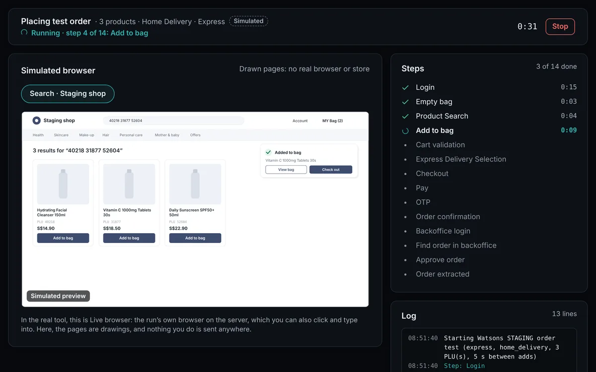

Simulated demoA test order that took 14 manual steps across three systems now starts with one confirmed click.
The project code is private (company project). The demo is simulated with sample data.
AI Automation & Business Solutions
Open to remote freelance projects

Simulated demoA test order that took 14 manual steps across three systems now starts with one confirmed click.
The project code is private (company project). The demo is simulated with sample data.